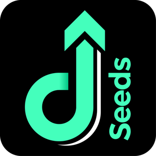

QA · MagangApr – Jul 2026
Seeds Finance App
Pengujian aplikasi Seeds Finance sebagai Quality Analyst intern. Detail teknis disamarkan karena menyangkut data internal perusahaan.
- Peran
- Pengujian manual, pelaporan dan dokumentasi bug, serta penyusunan PRD untuk beberapa fitur.
- Kolaborasi
- Bekerja dengan tim desain dan developer agar implementasi sesuai UI/UX di Figma.
- Alat
- ClickUpFigmaGoogle Sheet
- Hasil
- Mendapat sertifikat apresiasi atas kinerja dan sikap profesional.